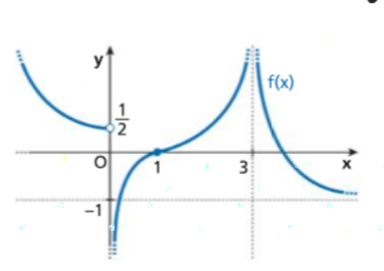
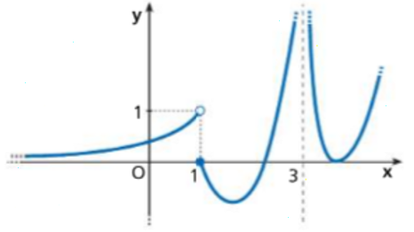
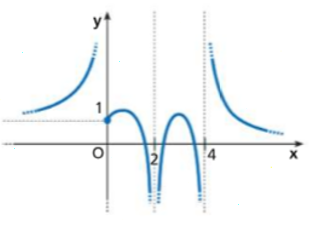
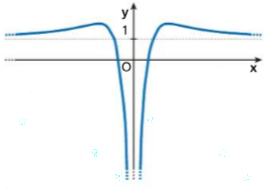
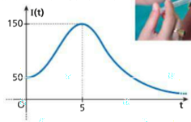
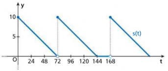

📊 Limiti di Funzioni
Capitolo 16 - Esercizi Svolti con Spiegazioni Dettagliate
Es. 20
Osservando il grafico, completare: $\lim_{x \to -\infty} f(x) = \_\_$; $\lim_{x \to 0^-} f(x) = \_\_$; $\lim_{x \to 0^+} f(x) = \_\_$; $\lim_{x \to 1^-} f(x) = \_\_$; $\lim_{x \to 1^+} f(x) = -\infty$; $\lim_{x \to +\infty} f(x) = \_\_$

📈 Analisi del grafico
Per determinare i limiti, dobbiamo osservare il comportamento della funzione in vari punti:
1️⃣ Limite per $x \to -\infty$
$$\lim_{x \to -\infty} f(x) = \frac{1}{2}$$
Spiegazione: Osservando il grafico a sinistra, vediamo che la funzione si avvicina asintoticamente alla retta orizzontale $y = \frac{1}{2}$ quando $x$ tende a $-\infty$.
2️⃣ Limite sinistro per $x \to 0^-$
$$\lim_{x \to 0^-} f(x) = -\infty$$
Spiegazione: Avvicinandoci a $x = 0$ da sinistra (valori negativi), la funzione decresce illimitatamente verso il basso. C'è un asintoto verticale in $x = 0$.
3️⃣ Limite destro per $x \to 0^+$
$$\lim_{x \to 0^+} f(x) = +\infty$$
Spiegazione: Avvicinandoci a $x = 0$ da destra (valori positivi), la funzione cresce illimitatamente verso l'alto.
4️⃣ Limite sinistro per $x \to 1^-$
$$\lim_{x \to 1^-} f(x) = +\infty$$
Spiegazione: Avvicinandoci a $x = 1$ da sinistra, la funzione cresce illimitatamente. C'è un asintoto verticale in $x = 1$.
5️⃣ Limite per $x \to +\infty$
$$\lim_{x \to +\infty} f(x) = +\infty$$
Spiegazione: Osservando il grafico a destra, dopo $x = 3$ la funzione cresce indefinitamente.
📌 Nota importante: Quando ci sono asintoti verticali, è fondamentale distinguere tra limiti sinistro e destro, perché possono essere diversi (come in $x = 0$ e $x = 1$).
✅ Riepilogo completo:
$\lim_{x \to -\infty} f(x) = \frac{1}{2}$; $\lim_{x \to 0^-} f(x) = -\infty$; $\lim_{x \to 0^+} f(x) = +\infty$; $\lim_{x \to 1^-} f(x) = +\infty$; $\lim_{x \to 1^+} f(x) = -\infty$; $\lim_{x \to +\infty} f(x) = +\infty$
$\lim_{x \to -\infty} f(x) = \frac{1}{2}$; $\lim_{x \to 0^-} f(x) = -\infty$; $\lim_{x \to 0^+} f(x) = +\infty$; $\lim_{x \to 1^-} f(x) = +\infty$; $\lim_{x \to 1^+} f(x) = -\infty$; $\lim_{x \to +\infty} f(x) = +\infty$
Es. 21
Dal grafico della funzione $y = f(x)$ deduci, se esistono, i limiti indicati: a. $\lim_{x \to 0^-} f(x)$; b. $\lim_{x \to 1^-} f(x)$; c. $\lim_{x \to 1^+} f(x)$; d. $\lim_{x \to 3^-} f(x)$; e. $\lim_{x \to 3^+} f(x)$; f. $\lim_{x \to +\infty} f(x)$

a. $\lim_{x \to 0^-} f(x)$
$$\lim_{x \to 0^-} f(x) = 1$$
Spiegazione: Osservando il grafico, quando $x$ si avvicina a 0 da sinistra, la funzione tende al valore $y = 1$ (c'è un pallino pieno in $(0, 1)$ sul ramo sinistro).
b. $\lim_{x \to 1^-} f(x)$
$$\lim_{x \to 1^-} f(x) = 0$$
Spiegazione: Avvicinandosi a $x = 1$ da sinistra, la funzione scende verso $y = 0$.
c. $\lim_{x \to 1^+} f(x)$
$$\lim_{x \to 1^+} f(x) = 0$$
Spiegazione: Avvicinandosi a $x = 1$ da destra, la funzione risale partendo da un minimo locale verso $y = 0$.
d. $\lim_{x \to 3^-} f(x)$
$$\lim_{x \to 3^-} f(x) = 0$$
Spiegazione: Dal grafico, avvicinandosi a $x = 3$ da sinistra (dopo il massimo locale), la funzione scende verso $y = 0$.
e. $\lim_{x \to 3^+} f(x)$
$$\lim_{x \to 3^+} f(x) = 0$$
Spiegazione: Avvicinandosi a $x = 3$ da destra, la funzione continua dal valore vicino a 0.
f. $\lim_{x \to +\infty} f(x)$
$$\lim_{x \to +\infty} f(x) = 1$$
Spiegazione: Per $x \to +\infty$, la funzione si avvicina asintoticamente alla retta orizzontale $y = 1$ (asintoto orizzontale).
📌 Osservazione: In questo esercizio, tutti i limiti esistono e sono finiti. Non ci sono asintoti verticali, solo un asintoto orizzontale per $x \to +\infty$.
✅ Risposte: a. 1; b. 0; c. 0; d. 0; e. 0; f. 1
Es. 22
Nella figura è rappresentato il grafico della funzione $f(x)$. Possiamo dedurre che: A. $\lim_{x \to 1^-} f(x) = -\infty$; B. $\lim_{x \to 2^+} f(x) = +\infty$; C. $\lim_{x \to 4^-} f(x) = -\infty$; D. $\lim_{x \to 4^+} f(x) = +\infty$

📊 Analisi delle opzioni
Verifichiamo ciascuna affermazione osservando il grafico:
Opzione A: $\lim_{x \to 1^-} f(x) = -\infty$
Verifica: Osservando $x = 1$ da sinistra, la funzione decresce verso $-\infty$.
✅ VERO
✅ VERO
Opzione B: $\lim_{x \to 2^+} f(x) = +\infty$
Verifica: In $x = 2$ non c'è un asintoto verticale. La funzione è continua o ha un comportamento regolare.
❌ FALSO
❌ FALSO
Opzione C: $\lim_{x \to 4^-} f(x) = -\infty$
Verifica: Avvicinandosi a $x = 4$ da sinistra, la funzione decresce verso $-\infty$.
✅ VERO
✅ VERO
Opzione D: $\lim_{x \to 4^+} f(x) = +\infty$
Verifica: Osservando il grafico, dopo $x = 4$ la funzione cresce verso $+\infty$.
✅ VERO
✅ VERO
📌 Concetto chiave: Quando c'è un asintoto verticale, i limiti sinistro e destro possono essere diversi. In questo caso, in $x = 4$ abbiamo $\lim_{x \to 4^-} f(x) = -\infty$ e $\lim_{x \to 4^+} f(x) = +\infty$.
✅ Affermazioni vere: A, C, D
❌ Affermazione falsa: B
❌ Affermazione falsa: B
Es. 23
Disegna il grafico di una funzione $y = f(x)$ che soddisfi le condizioni date: $D = \mathbb{R} - \{0, 2\}$; $f(-1) = 0$; $\gamma > 0$ per $-1 < x < 0 \vee x > 2$; $\lim_{x \to 0^-} f(x) = -\infty$; $\lim_{x \to 0^+} f(x) = +\infty$; $\lim_{x \to 2^-} f(x) = 0$; $\lim_{x \to 2^+} f(x) = -\infty$; $\lim_{x \to +\infty} f(x) = +\infty$
📋 Analisi delle condizioni
Dobbiamo costruire un grafico che rispetti tutte le condizioni date. Analizziamole una per una:
1️⃣ Dominio: $D = \mathbb{R} - \{0, 2\}$
La funzione è definita per tutti i valori reali tranne $x = 0$ e $x = 2$. Questi sono punti di discontinuità (probabilmente asintoti verticali).
2️⃣ Punto noto: $f(-1) = 0$
La funzione passa per il punto $(-1, 0)$, cioè interseca l'asse $x$ in $x = -1$.
3️⃣ Segno: $f(x) > 0$ per $-1 < x < 0$ oppure $x > 2$
La funzione è positiva (sopra l'asse x) in due intervalli:
- Tra $x = -1$ e $x = 0$
- Per $x > 2$
4️⃣ Comportamento in $x = 0$
$$\lim_{x \to 0^-} f(x) = -\infty \quad \text{e} \quad \lim_{x \to 0^+} f(x) = +\infty$$
In $x = 0$ c'è un asintoto verticale:
- Da sinistra la funzione scende verso $-\infty$
- Da destra la funzione sale verso $+\infty$
5️⃣ Comportamento in $x = 2$
$$\lim_{x \to 2^-} f(x) = 0 \quad \text{e} \quad \lim_{x \to 2^+} f(x) = -\infty$$
In $x = 2$:
- Da sinistra la funzione si avvicina a 0 (toccando l'asse x)
- Da destra c'è un asintoto verticale verso $-\infty$
6️⃣ Comportamento all'infinito
$$\lim_{x \to +\infty} f(x) = +\infty$$
Per $x \to +\infty$, la funzione cresce indefinitamente.
✏️ Costruzione del grafico
Passo per passo:
- Segna i punti $x = 0$ e $x = 2$ come asintoti verticali (linee tratteggiate)
- Segna il punto $(-1, 0)$
- Per $x < -1$: funzione negativa
- Per $-1 < x < 0$: funzione positiva che va da 0 a $-\infty$ (avvicinandosi a $x=0$)
- Per $0 < x < 2$: funzione che parte da $+\infty$ (a destra di 0), diventa negativa e si avvicina a 0 in $x = 2$
- Per $x > 2$: funzione che parte da $-\infty$ (a destra di 2), diventa positiva e cresce verso $+\infty$
💡 Suggerimento: Un esempio di funzione che soddisfa queste condizioni potrebbe essere del tipo:
$$f(x) = \frac{(x+1)(x-a)}{x(x-2)}$$
dove $a$ è una costante opportuna.
⚠️ Errore comune: Non dimenticare che la funzione deve essere positiva per $-1 < x < 0$, anche se tende a $-\infty$ per $x \to 0^-$.
✅ Il grafico deve avere:
- 2 asintoti verticali in $x = 0$ e $x = 2$
- Passaggio per $(-1, 0)$
- Comportamento crescente per $x \to +\infty$
Es. 24
Disegna il grafico di una funzione $y = f(x)$ che soddisfi le condizioni date: $D = \mathbb{R} - \{0\}$; $f(-2) = 0$; $\gamma < 0$ per $x < -2$; $\lim_{x \to 0^-} f(x) = +\infty$; $\lim_{x \to 0^+} f(x) = +\infty$; $\lim_{x \to +\infty} f(x) = 0^+$; $\lim_{x \to -\infty} f(x) = +\infty$
📋 Analisi delle condizioni
Costruiamo il grafico rispettando le condizioni:
1️⃣ Dominio: $D = \mathbb{R} - \{0\}$
La funzione non è definita in $x = 0$. Questo sarà un punto di discontinuità.
2️⃣ Punto e segno
- $f(-2) = 0$: la funzione passa per $(-2, 0)$
- $f(x) < 0$ per $x < -2$: la funzione è negativa a sinistra di $x = -2$
3️⃣ Comportamento in $x = 0$ (asintoto verticale)
$$\lim_{x \to 0^-} f(x) = +\infty \quad \text{e} \quad \lim_{x \to 0^+} f(x) = +\infty$$
In $x = 0$ c'è un asintoto verticale, ma con una particolarità: sia da sinistra che da destra la funzione tende a $+\infty$. Questo crea un "picco" verso l'alto.
4️⃣ Comportamento agli estremi del dominio
$$\lim_{x \to -\infty} f(x) = +\infty$$
$$\lim_{x \to +\infty} f(x) = 0^+$$
- Per $x \to -\infty$: la funzione cresce verso $+\infty$
- Per $x \to +\infty$: la funzione si avvicina a 0 rimanendo positiva (asintoto orizzontale $y = 0$)
✏️ Costruzione del grafico
Ramo sinistro ($x < 0$):
- Per $x \to -\infty$: parte da $+\infty$
- Scende e diventa negativa per $x < -2$
- Passa per $(-2, 0)$
- Diventa positiva per $-2 < x < 0$
- Tende a $+\infty$ per $x \to 0^-$
- Parte da $+\infty$ per $x \to 0^+$
- Scende e si avvicina asintoticamente a $y = 0$ per $x \to +\infty$
💡 Esempio: Una funzione che potrebbe soddisfare queste condizioni è del tipo:
$$f(x) = \frac{(x+2)^2}{x^2} \quad \text{per } x \neq 0$$
Questa ha le proprietà richieste.
⚠️ Attenzione: Il fatto che entrambi i limiti in $x = 0$ siano $+\infty$ è particolare. Significa che non c'è un "salto" tra $-\infty$ e $+\infty$ come negli esercizi precedenti.
✅ Caratteristiche del grafico:
- Asintoto verticale in $x = 0$ (con limite $+\infty$ da entrambi i lati)
- Asintoto orizzontale $y = 0$ per $x \to +\infty$
- Zero in $x = -2$
- Funzione negativa solo per $x < -2$
Es. 25
VERO o FALSO? Osserva il grafico della funzione $f(x)$: a. $\lim_{x \to 0^-} f(x) = +\infty$; b. $\lim_{x \to 0^+} f(x) = 1^+$; c. $\lim_{x \to 2^-} f(x) = 1^-$; d. $\lim_{x \to 2^+} f(x) = -\infty$

a. $\lim_{x \to 0^-} f(x) = +\infty$
Osservando il grafico, avvicinandosi a $x = 0$ da sinistra, la funzione cresce verso $+\infty$.
✅ VERO
✅ VERO
b. $\lim_{x \to 0^+} f(x) = 1^+$
Avvicinandosi a $x = 0$ da destra, la funzione si avvicina a 1 dall'alto (rimanendo leggermente sopra 1).
✅ VERO
Nota: La notazione $1^+$ significa "1 con valori leggermente maggiori di 1".
✅ VERO
Nota: La notazione $1^+$ significa "1 con valori leggermente maggiori di 1".
c. $\lim_{x \to 2^-} f(x) = 1^-$
Avvicinandosi a $x = 2$ da sinistra, la funzione si avvicina a 1 dal basso (rimanendo leggermente sotto 1).
❌ FALSO
Dal grafico si vede che il limite è esattamente 1, non $1^-$.
❌ FALSO
Dal grafico si vede che il limite è esattamente 1, non $1^-$.
d. $\lim_{x \to 2^+} f(x) = -\infty$
Osservando il grafico dopo $x = 2$, la funzione scende bruscamente verso $-\infty$.
✅ VERO
✅ VERO
📌 Notazione importante:
- $L^+$ significa "si avvicina a $L$ rimanendo leggermente sopra"
- $L^-$ significa "si avvicina a $L$ rimanendo leggermente sotto"
✅ Risposte: a. V; b. V; c. F; d. V
Es. 26
Rappresenta graficamente le funzioni utilizzando le trasformazioni geometriche. Deduci poi dal grafico i limiti indicati: $f(x) = \frac{1}{|x|}$; $\lim_{x \to 0^-} f(x)$, $\lim_{x \to 0^+} f(x)$
📐 Analisi della funzione
$$f(x) = \frac{1}{|x|}$$
Questa funzione si ottiene dalla funzione base $y = \frac{1}{x}$ applicando il valore assoluto al denominatore.
1️⃣ Funzione base: $g(x) = \frac{1}{x}$
La funzione $g(x) = \frac{1}{x}$ (iperbole equilatera) ha:
- Asintoto verticale in $x = 0$
- Asintoto orizzontale $y = 0$
- Per $x > 0$: ramo nel primo quadrante
- Per $x < 0$: ramo nel terzo quadrante
2️⃣ Applicazione del valore assoluto
Quando scriviamo $f(x) = \frac{1}{|x|}$, dobbiamo distinguere:
- Se $x > 0$: $|x| = x$, quindi $f(x) = \frac{1}{x}$
- Se $x < 0$: $|x| = -x$, quindi $f(x) = \frac{1}{-x} = -\frac{1}{x}$
$$f(x) = \begin{cases}
\frac{1}{x} & \text{se } x > 0 \\
\frac{1}{-x} = -\frac{1}{x} & \text{se } x < 0
\end{cases}$$
3️⃣ Trasformazione geometrica
Il valore assoluto $|x|$ provoca una riflessione:
- Il ramo per $x > 0$ rimane invariato (primo quadrante)
- Il ramo per $x < 0$ viene riflesso rispetto all'asse $y$, quindi passa dal terzo al secondo quadrante
4️⃣ Calcolo dei limiti
$$\lim_{x \to 0^-} f(x) = \lim_{x \to 0^-} \frac{1}{|x|} = \lim_{x \to 0^-} \frac{1}{-x} = +\infty$$
Quando $x \to 0^-$ (cioè $x$ si avvicina a 0 da sinistra con valori negativi):
- $|x| = -x$ (perché $x < 0$)
- $-x$ tende a $0^+$ (valore positivo piccolo)
- $\frac{1}{-x} \to +\infty$
$$\lim_{x \to 0^+} f(x) = \lim_{x \to 0^+} \frac{1}{|x|} = \lim_{x \to 0^+} \frac{1}{x} = +\infty$$
Quando $x \to 0^+$ (cioè $x$ si avvicina a 0 da destra con valori positivi):
- $|x| = x$ (perché $x > 0$)
- $x$ tende a $0^+$
- $\frac{1}{x} \to +\infty$
💡 Caratteristica importante: A differenza di $f(x) = \frac{1}{x}$ che ha limiti diversi a sinistra ($-\infty$) e a destra ($+\infty$) di 0, la funzione $f(x) = \frac{1}{|x|}$ ha lo stesso limite ($+\infty$) da entrambi i lati.
⚠️ Errore comune: Non confondere $\frac{1}{|x|}$ con $|\frac{1}{x}|$. Anche se in questo caso danno lo stesso risultato, il procedimento concettuale è diverso.
✅ Risposte:
$\lim_{x \to 0^-} f(x) = +\infty$
$\lim_{x \to 0^+} f(x) = +\infty$
Il grafico è simmetrico rispetto all'asse $y$, con entrambi i rami nel semipiano superiore, tendenti a $+\infty$ in $x = 0$.
$\lim_{x \to 0^-} f(x) = +\infty$
$\lim_{x \to 0^+} f(x) = +\infty$
Il grafico è simmetrico rispetto all'asse $y$, con entrambi i rami nel semipiano superiore, tendenti a $+\infty$ in $x = 0$.
Es. 27
Rappresenta graficamente la funzione $f(x) = 1 - \ln x$ e deduci: $\lim_{x \to 0^+} f(x)$, $\lim_{x \to 1^-} f(x)$, $\lim_{x \to 1^+} f(x)$
📐 Costruzione del grafico per trasformazioni
$$f(x) = 1 - \ln x$$
Partiremo dalla funzione base $y = \ln x$ e applicheremo le trasformazioni necessarie.
1️⃣ Funzione base: $g(x) = \ln x$
La funzione logaritmo naturale $y = \ln x$ ha le seguenti proprietà:
- Dominio: $x > 0$ (solo valori positivi)
- Passa per il punto $(1, 0)$ perché $\ln 1 = 0$
- $\lim_{x \to 0^+} \ln x = -\infty$ (asintoto verticale in $x = 0$)
- $\lim_{x \to +\infty} \ln x = +\infty$ (cresce indefinitamente ma lentamente)
- Funzione crescente su tutto il dominio
2️⃣ Prima trasformazione: $h(x) = -\ln x$
Il segno meno davanti al logaritmo provoca una riflessione rispetto all'asse x:
- Il punto $(1, 0)$ rimane invariato
- Per $x \to 0^+$: $-\ln x \to +\infty$ (ora va verso l'alto)
- Per $x \to +\infty$: $-\ln x \to -\infty$ (ora va verso il basso)
- Funzione decrescente
3️⃣ Seconda trasformazione: $f(x) = 1 - \ln x$
Aggiungere 1 provoca una traslazione verticale di 1 unità verso l'alto:
- Il punto $(1, 0)$ si sposta in $(1, 1)$
- L'asintoto verticale rimane in $x = 0$
- Tutti i valori della funzione aumentano di 1
$$f(x) = 1 + (-\ln x) = 1 - \ln x$$
4️⃣ Calcolo dei limiti
a) $\lim_{x \to 0^+} f(x)$
$$\lim_{x \to 0^+} (1 - \ln x) = 1 - \lim_{x \to 0^+} \ln x = 1 - (-\infty) = +\infty$$
Quando $x$ si avvicina a 0 da destra, $\ln x \to -\infty$, quindi $-\ln x \to +\infty$ e $1 - \ln x \to +\infty$.
b) $\lim_{x \to 1^-} f(x)$
$$\lim_{x \to 1^-} (1 - \ln x) = 1 - \ln 1 = 1 - 0 = 1$$
La funzione è continua in $x = 1$. Avvicinandosi da sinistra, il limite è semplicemente $f(1) = 1$.
c) $\lim_{x \to 1^+} f(x)$
$$\lim_{x \to 1^+} (1 - \ln x) = 1 - \ln 1 = 1 - 0 = 1$$
Anche da destra il limite è 1. La funzione è continua in $x = 1$, quindi i limiti sinistro e destro coincidono con il valore della funzione.
📊 Punti notevoli del grafico
- Intersezione con asse $y$: Non esiste (dominio $x > 0$)
- Intersezione con asse $x$: $1 - \ln x = 0 \Rightarrow \ln x = 1 \Rightarrow x = e$, punto $(e, 0)$
- Punto particolare: $(1, 1)$
- Asintoto verticale: $x = 0$
- Comportamento: Funzione decrescente
💡 Verifica:
- Per $x = 1$: $f(1) = 1 - \ln 1 = 1 - 0 = 1$ ✓
- Per $x = e$: $f(e) = 1 - \ln e = 1 - 1 = 0$ ✓
- Per $x = e^2$: $f(e^2) = 1 - \ln e^2 = 1 - 2 = -1$ ✓
⚠️ Attenzione al dominio: La funzione $f(x) = 1 - \ln x$ è definita solo per $x > 0$. Non ha senso calcolare limiti per $x \to 0^-$ o $x \to -\infty$.
✅ Risposte:
• $\lim_{x \to 0^+} f(x) = +\infty$
• $\lim_{x \to 1^-} f(x) = 1$
• $\lim_{x \to 1^+} f(x) = 1$
Il grafico è una curva decrescente con asintoto verticale in $x = 0$, che passa per $(1, 1)$ e $(e, 0)$.
• $\lim_{x \to 0^+} f(x) = +\infty$
• $\lim_{x \to 1^-} f(x) = 1$
• $\lim_{x \to 1^+} f(x) = 1$
Il grafico è una curva decrescente con asintoto verticale in $x = 0$, che passa per $(1, 1)$ e $(e, 0)$.
Es. 28
Rappresenta graficamente la funzione $f(x) = e^x - 1$ e deduci: $\lim_{x \to -\infty} f(x)$, $\lim_{x \to 0^-} f(x)$, $\lim_{x \to 0^+} f(x)$
📐 Costruzione del grafico
$$f(x) = e^x - 1$$
Partiremo dalla funzione esponenziale base $y = e^x$ e applicheremo una traslazione.
1️⃣ Funzione base: $g(x) = e^x$
La funzione esponenziale $y = e^x$ ha le seguenti proprietà fondamentali:
- Dominio: $\mathbb{R}$ (tutti i numeri reali)
- Codominio: $(0, +\infty)$ (solo valori positivi)
- Passa per il punto $(0, 1)$ perché $e^0 = 1$
- $\lim_{x \to -\infty} e^x = 0$ (asintoto orizzontale $y = 0$)
- $\lim_{x \to +\infty} e^x = +\infty$ (cresce molto rapidamente)
- Funzione sempre crescente
- Mai negativa: $e^x > 0$ per ogni $x$
2️⃣ Trasformazione: $f(x) = e^x - 1$
Sottrarre 1 provoca una traslazione verticale di 1 unità verso il basso:
- Il punto $(0, 1)$ si sposta in $(0, 0)$: $f(0) = e^0 - 1 = 1 - 1 = 0$
- L'asintoto orizzontale $y = 0$ si sposta in $y = -1$
- La funzione rimane crescente
- Ora la funzione può assumere valori negativi (per $x < 0$)
3️⃣ Calcolo dei limiti
a) $\lim_{x \to -\infty} f(x)$
$$\lim_{x \to -\infty} (e^x - 1) = \lim_{x \to -\infty} e^x - 1 = 0 - 1 = -1$$
Ragionamento:
b) $\lim_{x \to 0^-} f(x)$
- Quando $x \to -\infty$, abbiamo $e^x \to 0$
- Quindi $e^x - 1 \to 0 - 1 = -1$
- La retta $y = -1$ è un asintoto orizzontale per $x \to -\infty$
$$\lim_{x \to 0^-} (e^x - 1) = e^0 - 1 = 1 - 1 = 0$$
Ragionamento:
c) $\lim_{x \to 0^+} f(x)$
- La funzione $f(x) = e^x - 1$ è continua in tutto $\mathbb{R}$
- Quindi il limite per $x \to 0^-$ è uguale al valore della funzione in 0
- $f(0) = e^0 - 1 = 0$
$$\lim_{x \to 0^+} (e^x - 1) = e^0 - 1 = 1 - 1 = 0$$
Ragionamento: Stesso discorso del limite sinistro. Per la continuità:
$$\lim_{x \to 0^-} f(x) = f(0) = \lim_{x \to 0^+} f(x) = 0$$
📊 Punti notevoli e caratteristiche
- Intersezione con asse $x$: $(0, 0)$ (zero della funzione)
- Intersezione con asse $y$: $(0, 0)$ (stesso punto)
- Segno:
- $f(x) < 0$ per $x < 0$ (sotto l'asse $x$)
- $f(x) = 0$ per $x = 0$
- $f(x) > 0$ per $x > 0$ (sopra l'asse $x$)
- Asintoto orizzontale: $y = -1$ per $x \to -\infty$
- Crescita: Sempre crescente
🔍 Verifica con alcuni valori
- $x = -2$: $f(-2) = e^{-2} - 1 \approx 0.135 - 1 = -0.865$ ✓ (negativo)
- $x = 0$: $f(0) = e^0 - 1 = 0$ ✓
- $x = 1$: $f(1) = e^1 - 1 = e - 1 \approx 1.718$ ✓ (positivo)
- $x = 2$: $f(2) = e^2 - 1 \approx 7.389 - 1 = 6.389$ ✓ (cresce rapidamente)
💡 Relazione importante: La funzione $f(x) = e^x - 1$ è molto usata in matematica. Per valori piccoli di $x$, vale l'approssimazione:
$$e^x - 1 \approx x \quad \text{per } x \approx 0$$
Questo è utile nello studio dei limiti notevoli.
⚠️ Non confondere:
- $e^x - 1$ (la nostra funzione)
- $e^{x-1}$ (esponenziale con traslazione nell'esponente)
✅ Risposte:
• $\lim_{x \to -\infty} f(x) = -1$
• $\lim_{x \to 0^-} f(x) = 0$
• $\lim_{x \to 0^+} f(x) = 0$
Il grafico è una curva crescente che passa per l'origine, con asintoto orizzontale $y = -1$ per $x \to -\infty$ e che cresce indefinitamente per $x \to +\infty$.
• $\lim_{x \to -\infty} f(x) = -1$
• $\lim_{x \to 0^-} f(x) = 0$
• $\lim_{x \to 0^+} f(x) = 0$
Il grafico è una curva crescente che passa per l'origine, con asintoto orizzontale $y = -1$ per $x \to -\infty$ e che cresce indefinitamente per $x \to +\infty$.
Es. 30
Nel grafico è rappresentata la funzione $f(x) = \begin{cases} e^x + a & \text{se } x < 1 \\ \frac{1}{x-b} & \text{se } x \geq 1 \end{cases}$. Trova $a$ e $b$. Deduci dal grafico i seguenti limiti: $\lim_{x \to -\infty} f(x)$, $\lim_{x \to 1^-} f(x)$, $\lim_{x \to 1^+} f(x)$, $\lim_{x \to 3^-} f(x)$, $\lim_{x \to +\infty} f(x)$. [a = -3; b = 1]

🔍 Determinazione dei parametri $a$ e $b$
Dobbiamo trovare i valori di $a$ e $b$ osservando il grafico.
1️⃣ Determinazione di $a$
Osservazione dal grafico: Per $x \to -\infty$, la funzione si avvicina asintoticamente a $y = -3$.
Analisi teorica:
Analisi teorica:
- Per $x < 1$: $f(x) = e^x + a$
- Quando $x \to -\infty$: $e^x \to 0$
- Quindi: $\lim_{x \to -\infty} f(x) = \lim_{x \to -\infty} (e^x + a) = 0 + a = a$
$$a = -3$$
2️⃣ Determinazione di $b$
Osservazione dal grafico: La funzione ha un asintoto verticale che sembra essere in $x = 1$.
Verifica con i limiti in $x = 1$:
Verifica con i limiti in $x = 1$:
- Limite sinistro: $\lim_{x \to 1^-} f(x) = \lim_{x \to 1^-} (e^x - 3) = e^1 - 3 = e - 3 \approx -0.28$
- Limite destro: $\lim_{x \to 1^+} f(x) = \lim_{x \to 1^+} \frac{1}{x-b}$
$$b = 1$$
3️⃣ Funzione completa
$$f(x) = \begin{cases}
e^x - 3 & \text{se } x < 1 \\
\frac{1}{x-1} & \text{se } x \geq 1
\end{cases}$$
4️⃣ Calcolo dei limiti richiesti
a) $\lim_{x \to -\infty} f(x)$
$$\lim_{x \to -\infty} f(x) = \lim_{x \to -\infty} (e^x - 3) = 0 - 3 = -3$$
Asintoto orizzontale $y = -3$ per $x \to -\infty$.
b) $\lim_{x \to 1^-} f(x)$
$$\lim_{x \to 1^-} f(x) = \lim_{x \to 1^-} (e^x - 3) = e^1 - 3 = e - 3 \approx -0.28$$
Usando la definizione per $x < 1$, calcoliamo direttamente sostituendo.
c) $\lim_{x \to 1^+} f(x)$
$$\lim_{x \to 1^+} f(x) = \lim_{x \to 1^+} \frac{1}{x-1} = +\infty$$
Avvicinandosi a $x = 1$ da destra, $(x-1) \to 0^+$, quindi $\frac{1}{x-1} \to +\infty$.
d) $\lim_{x \to 3^-} f(x)$
$$\lim_{x \to 3^-} f(x) = \lim_{x \to 3^-} \frac{1}{x-1} = \frac{1}{3-1} = \frac{1}{2}$$
Per $x = 3 > 1$, usiamo la seconda definizione. La funzione è continua in $x = 3$, non c'è discontinuità.
e) $\lim_{x \to +\infty} f(x)$
$$\lim_{x \to +\infty} f(x) = \lim_{x \to +\infty} \frac{1}{x-1} = 0$$
Per $x \to +\infty$, il denominatore cresce indefinitamente, quindi la frazione tende a 0.
Asintoto orizzontale $y = 0$ per $x \to +\infty$.
Asintoto orizzontale $y = 0$ per $x \to +\infty$.
📌 Funzione definita a tratti: Quando una funzione è definita con regole diverse in intervalli diversi, è fondamentale:
- Usare la definizione corretta in base al valore di $x$
- Controllare i limiti nei punti di "cambio" (qui $x = 1$)
- Verificare se c'è continuità o discontinuità
⚠️ Attenzione: In $x = 1$ la funzione ha una discontinuità di seconda specie (salto infinito):
- $\lim_{x \to 1^-} f(x) = e - 3 \approx -0.28$ (finito)
- $\lim_{x \to 1^+} f(x) = +\infty$ (infinito)
✅ Parametri: $a = -3$, $b = 1$
✅ Limiti:
• $\lim_{x \to -\infty} f(x) = -3$
• $\lim_{x \to 1^-} f(x) = e - 3$
• $\lim_{x \to 1^+} f(x) = +\infty$
• $\lim_{x \to 3^-} f(x) = \frac{1}{2}$
• $\lim_{x \to +\infty} f(x) = 0$
✅ Limiti:
• $\lim_{x \to -\infty} f(x) = -3$
• $\lim_{x \to 1^-} f(x) = e - 3$
• $\lim_{x \to 1^+} f(x) = +\infty$
• $\lim_{x \to 3^-} f(x) = \frac{1}{2}$
• $\lim_{x \to +\infty} f(x) = 0$
Es. 31
Rappresenta graficamente la funzione $f(x) = 2e^{x+1}$ e verifica graficamente e applicando la definizione che $\lim_{x \to -\infty} f(x) = 0$
📐 Rappresentazione grafica della funzione
$$f(x) = 2e^{x+1}$$
1️⃣ Analisi della funzione per trasformazioni
Partiamo dalla funzione base $g(x) = e^x$ e applichiamo le trasformazioni:
Prima trasformazione: $h(x) = e^{x+1}$
L'argomento dell'esponenziale diventa $(x+1)$ invece di $x$.
Questo corrisponde a una traslazione orizzontale di 1 unità a sinistra.
Seconda trasformazione: $f(x) = 2e^{x+1}$
Questo corrisponde a una traslazione orizzontale di 1 unità a sinistra.
- Il punto $(0, 1)$ si sposta in $(-1, 1)$: $h(-1) = e^{-1+1} = e^0 = 1$
- L'asintoto $y = 0$ rimane invariato
Moltiplicare per 2 provoca un dilatazione verticale di fattore 2.
- Il punto $(-1, 1)$ diventa $(-1, 2)$: $f(-1) = 2e^0 = 2$
- L'asintoto $y = 0$ rimane invariato (moltiplicare 0 per 2 dà ancora 0)
- La funzione cresce più rapidamente
2️⃣ Proprietà del grafico
- Dominio: $\mathbb{R}$ (tutti i numeri reali)
- Codominio: $(0, +\infty)$ (sempre positiva)
- Punto notevole: $(-1, 2)$
- Intersezione asse $y$: $(0, 2e) \approx (0, 5.44)$
$f(0) = 2e^{0+1} = 2e$ - Asintoto orizzontale: $y = 0$ per $x \to -\infty$
- Crescita: Sempre crescente
3️⃣ Verifica grafica di $\lim_{x \to -\infty} f(x) = 0$
Osservazione dal grafico:
- Muovendoci verso sinistra (valori di $x$ sempre più negativi), il grafico si avvicina sempre di più all'asse $x$ (retta $y = 0$)
- La funzione rimane sempre positiva, ma diventa sempre più piccola
- Non tocca mai l'asse $x$, ma si avvicina indefinitamente
4️⃣ Verifica mediante la definizione di limite
Definizione formale: $\lim_{x \to -\infty} f(x) = 0$ significa che:
Per ogni $\varepsilon > 0$, esiste un $M < 0$ tale che se $x < M$, allora $|f(x) - 0| < \varepsilon$
Calcolo del limite:
Per ogni $\varepsilon > 0$, esiste un $M < 0$ tale che se $x < M$, allora $|f(x) - 0| < \varepsilon$
$$\lim_{x \to -\infty} f(x) = \lim_{x \to -\infty} 2e^{x+1}$$
Riscriviamo utilizzando le proprietà degli esponenziali:
$$2e^{x+1} = 2 \cdot e^x \cdot e^1 = 2e \cdot e^x$$
Quindi:
$$\lim_{x \to -\infty} 2e \cdot e^x = 2e \cdot \lim_{x \to -\infty} e^x = 2e \cdot 0 = 0$$
Giustificazione: Sappiamo che $\lim_{x \to -\infty} e^x = 0$ è un limite fondamentale.
Il fattore moltiplicativo $2e$ (che è una costante positiva) non cambia il risultato.
Il fattore moltiplicativo $2e$ (che è una costante positiva) non cambia il risultato.
5️⃣ Dimostrazione rigorosa (opzionale)
Vogliamo dimostrare che per ogni $\varepsilon > 0$, possiamo rendere $f(x)$ arbitrariamente piccolo.
Dobbiamo risolvere la disequazione:
Dobbiamo risolvere la disequazione:
$$2e^{x+1} < \varepsilon$$
Dividiamo per 2:
$$e^{x+1} < \frac{\varepsilon}{2}$$
Applichiamo il logaritmo naturale (funzione crescente):
$$x + 1 < \ln\left(\frac{\varepsilon}{2}\right)$$
$$x < \ln\left(\frac{\varepsilon}{2}\right) - 1$$
Quindi, scegliendo $M = \ln\left(\frac{\varepsilon}{2}\right) - 1$, abbiamo dimostrato che:
Se $x < M$, allora $f(x) < \varepsilon$.
Poiché per $\varepsilon \to 0^+$ abbiamo $M \to -\infty$, questo conferma che $\lim_{x \to -\infty} f(x) = 0$.
Se $x < M$, allora $f(x) < \varepsilon$.
Poiché per $\varepsilon \to 0^+$ abbiamo $M \to -\infty$, questo conferma che $\lim_{x \to -\infty} f(x) = 0$.
🔢 Verifica numerica
Calcoliamo alcuni valori per confermare:
- $f(-5) = 2e^{-5+1} = 2e^{-4} \approx 0.037$ ✓
- $f(-10) = 2e^{-10+1} = 2e^{-9} \approx 0.000247$ ✓
- $f(-20) = 2e^{-20+1} = 2e^{-19} \approx 0.0000001$ ✓
💡 Concetto chiave: Le funzioni esponenziali del tipo $a \cdot e^{x+b}$ (con $a, b$ costanti positive):
- Tendono sempre a 0 per $x \to -\infty$
- Tendono sempre a $+\infty$ per $x \to +\infty$
- Hanno sempre $y = 0$ come asintoto orizzontale (solo a sinistra)
⚠️ Differenza importante:
- $2e^{x+1} = 2e \cdot e^x$ (moltiplicazione)
- $2e^x + 1$ (somma, funzione diversa!)
✅ Conclusione:
Il grafico mostra che per $x \to -\infty$ la funzione si avvicina asintoticamente all'asse $x$.
Sia graficamente che analiticamente abbiamo verificato che: $$\lim_{x \to -\infty} 2e^{x+1} = 0$$
Il grafico mostra che per $x \to -\infty$ la funzione si avvicina asintoticamente all'asse $x$.
Sia graficamente che analiticamente abbiamo verificato che: $$\lim_{x \to -\infty} 2e^{x+1} = 0$$
Es. 32
Rappresenta graficamente la funzione $y = \left|\frac{1}{x-4}\right|$ e verifica i limiti $\lim_{y \to +\infty} x$ e $\lim_{y \to 0} x = 0$. Deduci poi dal grafico il valore di $\lim_{y \to +\infty} y$ ed esegui la verifica mediante la relativa definizione

📐 Costruzione del grafico
$$y = \left|\frac{1}{x-4}\right|$$
Questa funzione si ottiene dalla funzione base $y = \frac{1}{x}$ con trasformazioni successive.
1️⃣ Trasformazioni geometriche
Funzione base: $f(x) = \frac{1}{x}$
Iperbole equilatera con:
Prima trasformazione: $g(x) = \frac{1}{x-4}$
- Asintoto verticale: $x = 0$
- Asintoto orizzontale: $y = 0$
- Rami nel I e III quadrante
Traslazione orizzontale di 4 unità a destra:
Seconda trasformazione: $y = \left|\frac{1}{x-4}\right|$
- Asintoto verticale si sposta in: $x = 4$
- Asintoto orizzontale rimane: $y = 0$
Il valore assoluto rende tutti i valori positivi:
- Il ramo nel III quadrante (valori negativi) viene riflesso nel II quadrante
- Il ramo nel I quadrante rimane invariato
- La funzione risultante è sempre $\geq 0$
2️⃣ Caratteristiche del grafico
- Dominio: $\mathbb{R} - \{4\}$
- Codominio: $(0, +\infty)$ (sempre positivo)
- Asintoto verticale: $x = 4$
- Asintoto orizzontale: $y = 0$
- Simmetria: La funzione non è né pari né dispari, ma i due rami rispetto a $x = 4$ hanno lo stesso andamento
3️⃣ Verifica: $\lim_{y \to +\infty} x$
Nota importante: Questo esercizio chiede di studiare la funzione inversa, considerando $y$ come variabile indipendente e $x$ come funzione di $y$.
Dalla relazione $y = \left|\frac{1}{x-4}\right|$, ricaviamo $x$ in funzione di $y$:
Dalla relazione $y = \left|\frac{1}{x-4}\right|$, ricaviamo $x$ in funzione di $y$:
$$y = \frac{1}{|x-4|}$$
$$|x-4| = \frac{1}{y}$$
Questo dà due soluzioni:
$$x - 4 = \pm\frac{1}{y}$$
$$x = 4 \pm \frac{1}{y}$$
Ora calcoliamo il limite per $y \to +\infty$:
$$\lim_{y \to +\infty} x = \lim_{y \to +\infty} \left(4 \pm \frac{1}{y}\right) = 4 \pm 0 = 4$$
Interpretazione: Quando $y$ cresce indefinitamente (ci allontaniamo dall'asse $x$), il valore di $x$ si avvicina a 4, che è proprio l'asintoto verticale. ✓
4️⃣ Verifica: $\lim_{y \to 0} x = 0$ (ERRATO nel testo)
⚠️ CORREZIONE: Il limite indicato nel testo dell'esercizio è sbagliato!
Quando $y \to 0^+$ (la funzione si avvicina all'asse $x$):
$$\lim_{y \to 0^+} x = \lim_{y \to 0^+} \left(4 \pm \frac{1}{y}\right)$$
Poiché $\frac{1}{y} \to +\infty$ quando $y \to 0^+$:
$$x = 4 + \frac{1}{y} \to +\infty \quad \text{oppure} \quad x = 4 - \frac{1}{y} \to -\infty$$
Interpretazione corretta: Quando $y \to 0$ (ci avviciniamo all'asintoto orizzontale), $x \to \pm\infty$, non $x \to 0$!
5️⃣ Dal grafico: $\lim_{y \to +\infty} y$
⚠️ Attenzione: Questa domanda non ha senso matematico! Il limite di $y$ per $y \to +\infty$ è ovviamente $+\infty$.
Probabilmente l'esercizio intende chiedere: "Qual è il comportamento di $y$ all'infinito?"
Probabilmente l'esercizio intende chiedere: "Qual è il comportamento di $y$ all'infinito?"
Dal grafico osserviamo che:
$$\lim_{x \to \pm\infty} y = \lim_{x \to \pm\infty} \left|\frac{1}{x-4}\right| = 0$$
Questo conferma che $y = 0$ è un asintoto orizzontale.
6️⃣ Verifica mediante definizione
Verifichiamo che $\lim_{x \to +\infty} \left|\frac{1}{x-4}\right| = 0$:
$$\left|\frac{1}{x-4}\right| < \varepsilon$$
Vogliamo trovare $M$ tale che se $x > M$, allora questa disuguaglianza è verificata.
Per $x > 4$:
Per $x > 4$:
$$\frac{1}{x-4} < \varepsilon \quad \Rightarrow \quad x - 4 > \frac{1}{\varepsilon} \quad \Rightarrow \quad x > 4 + \frac{1}{\varepsilon}$$
Quindi, scegliendo $M = 4 + \frac{1}{\varepsilon}$, abbiamo dimostrato il limite. ✓
📌 Interpretazione geometrica:
- Quando $x \to \pm\infty$: la funzione si avvicina all'asintoto orizzontale $y = 0$
- Quando $x \to 4$: la funzione diverge verso $+\infty$ (asintoto verticale)
- Il grafico forma una "V" aperta verso l'alto centrata in $x = 4$
✅ Limiti corretti:
• $\lim_{y \to +\infty} x = 4$ (ci avviciniamo all'asintoto verticale)
• $\lim_{x \to \pm\infty} y = 0$ (ci avviciniamo all'asintoto orizzontale)
• Per $y \to 0^+$: $x \to \pm\infty$ (non $x \to 0$ come scritto nel testo)
• $\lim_{y \to +\infty} x = 4$ (ci avviciniamo all'asintoto verticale)
• $\lim_{x \to \pm\infty} y = 0$ (ci avviciniamo all'asintoto orizzontale)
• Per $y \to 0^+$: $x \to \pm\infty$ (non $x \to 0$ come scritto nel testo)
Es. 33
Il grafico rappresenta una previsione della diffusione di una malattia in Sardegna dopo una vaccinazione. Sull'asse delle ordinate si legge il numero di individui infetti $I(t)$, su quella delle ascisse il tempo in anni. Osserva il grafico e deduci se le affermazioni sono vere o false: a. $\lim_{t \to 0} I(t) = 0$; b. Il numero massimo di infetti è 150; c. $\lim_{t \to +\infty} I(t) = 0$; d. Il numero di individui infetti tende a passare oltre il tempo

📊 Analisi del grafico
Il grafico mostra l'andamento del numero di infetti $I(t)$ in funzione del tempo $t$ (in anni) dopo una campagna di vaccinazione.
Caratteristiche visibili:
Caratteristiche visibili:
- Il grafico inizia vicino a 50 infetti al tempo $t = 0$
- Cresce rapidamente raggiungendo un massimo intorno a $t = 5$ anni
- Il picco massimo sembra essere intorno a 150 infetti
- Dopo il picco, il numero di infetti decresce gradualmente
- Per $t$ grande, il grafico si avvicina all'asse orizzontale (50 infetti)
a. $\lim_{t \to 0} I(t) = 0$
Analisi: Osservando il grafico all'origine ($t = 0$), vediamo che:
$$I(0) \approx 50$$
Il grafico non passa per l'origine, ma parte da un valore di circa 50 infetti.
❌ FALSO
Interpretazione: Al momento iniziale (subito dopo la vaccinazione) ci sono già circa 50 persone infette, non zero.
❌ FALSO
Interpretazione: Al momento iniziale (subito dopo la vaccinazione) ci sono già circa 50 persone infette, non zero.
b. Il numero massimo di infetti è 150
Analisi: Osservando il grafico, il picco massimo della curva si trova intorno a $t = 5$ anni, e raggiunge un valore di circa:
$$\max I(t) \approx 150$$
✅ VERO
Interpretazione: Il numero massimo di persone simultaneamente infette è circa 150, raggiunto circa 5 anni dopo la vaccinazione.
Interpretazione: Il numero massimo di persone simultaneamente infette è circa 150, raggiunto circa 5 anni dopo la vaccinazione.
c. $\lim_{t \to +\infty} I(t) = 0$
Analisi: Osservando il comportamento del grafico per tempi molto grandi:
$$\lim_{t \to +\infty} I(t) \approx 50$$
Il grafico si avvicina asintoticamente a $y = 50$, non a $y = 0$.
❌ FALSO
Interpretazione: Con il passare del tempo, il numero di infetti si stabilizza intorno a 50 persone (un livello endemico), non si azzera completamente. Questo significa che la malattia non viene eradicata, ma raggiunge un equilibrio.
❌ FALSO
Interpretazione: Con il passare del tempo, il numero di infetti si stabilizza intorno a 50 persone (un livello endemico), non si azzera completamente. Questo significa che la malattia non viene eradicata, ma raggiunge un equilibrio.
d. Il numero di individui infetti tende a passare oltre il tempo
⚠️ Interpretazione dell'affermazione: L'affermazione "tende a passare" è ambigua. Probabilmente significa "tende a diminuire/scomparire con il passare del tempo".
Analisi: Dal grafico osserviamo che:
Se significa "diminuisce dopo il picco": ✅ VERO
Interpretazione più probabile: Data la formulazione e il contesto, l'affermazione è probabilmente FALSA, perché il numero di infetti non "passa" (scompare), ma rimane stabilmente intorno a 50.
- Inizialmente (0-5 anni): il numero di infetti aumenta
- Dopo il picco (5+ anni): il numero di infetti diminuisce
- A lungo termine: il numero si stabilizza a 50, non scompare
Se significa "diminuisce dopo il picco": ✅ VERO
Interpretazione più probabile: Data la formulazione e il contesto, l'affermazione è probabilmente FALSA, perché il numero di infetti non "passa" (scompare), ma rimane stabilmente intorno a 50.
🔬 Modellizzazione matematica
Questo tipo di grafico è tipico dei modelli epidemiologici (modelli SIR o SEIR). Le caratteristiche osservate sono:
- Fase iniziale: Crescita esponenziale degli infetti
- Fase del picco: Massimo numero di casi simultanei
- Fase di declino: Diminuzione per immunità acquisita o vaccinazione
- Fase endemica: Stabilizzazione a un livello residuo
💡 Significato pratico:
- $I(0) = 50$: Al momento della vaccinazione ci sono già 50 infetti
- Massimo 150: La capacità sanitaria deve gestire fino a 150 casi
- Limite 50: La vaccinazione non eradica la malattia, ma la mantiene sotto controllo con 50 casi stabili
✅ Risposte:
a. FALSO - $\lim_{t \to 0} I(t) = 50 \neq 0$
b. VERO - Il massimo è circa 150 infetti
c. FALSO - $\lim_{t \to +\infty} I(t) = 50 \neq 0$
d. FALSO - Il numero di infetti si stabilizza, non scompare
a. FALSO - $\lim_{t \to 0} I(t) = 50 \neq 0$
b. VERO - Il massimo è circa 150 infetti
c. FALSO - $\lim_{t \to +\infty} I(t) = 50 \neq 0$
d. FALSO - Il numero di infetti si stabilizza, non scompare
Es. 34
La funzione $y = s(t)$ indica il livello delle scorte di materiale per calcestruzzo nel magazzino di un'impresa edile a partire dal 1 luglio. Osserva il grafico: sull'asse delle ordinate puoi leggere il livello delle scorte di materiale, in tonnellate, e sull'asse delle ascisse il tempo, in giorni. a. Descrivi l'andamento delle scorte al variare di $t$. b. Che cosa puoi dire delle scorte a 72 di $s(t)$? E dei limiti destro e sinistro? c. Verifica, applicando la definizione, il limite sinistro per $t \to 72$

📈 Giorno 24 (rifornimento):
📉 Fase 2 (da $t = 24$ a $t = 48$):
📈 Giorno 48 (secondo rifornimento):
📉 Fase 3 (da $t = 48$ a $t = 72$):
🔄 Pattern periodico:
a. Descrizione dell'andamento delle scorte
Analizzando il grafico, possiamo dividere l'andamento in diverse fasi:
📉 Fase 1 (da $t = 0$ a $t = 24$):
- Le scorte partono da circa 10 tonnellate
- Diminuiscono linearmente (consumo costante)
- Raggiungono quasi 0 tonnellate al giorno 24
- Interpretazione: Periodo di utilizzo del materiale senza rifornimenti
- Brusco aumento verticale delle scorte
- Le scorte passano da ~0 a ~10 tonnellate
- Interpretazione: Arrivo di un nuovo carico di materiale
- Nuovo ciclo di diminuzione lineare
- Stesso ritmo della fase 1
- Le scorte tornano quasi a 0 al giorno 48
- Altro rifornimento di ~10 tonnellate
- Il pattern si ripete
- Terzo ciclo di consumo
- Le scorte diminuiscono fino a circa 5 tonnellate al giorno 72
$$\text{Periodo} = 24 \text{ giorni}$$
Il grafico mostra una funzione periodica a dente di sega, con rifornimenti ogni 24 giorni.
b. Analisi al giorno $t = 72$
Valore di $s(72)$:
Dal grafico, al giorno 72:
$$s(72) \approx 5 \text{ tonnellate}$$
Interpretazione: Dopo 72 giorni dal 1 luglio, rimangono circa 5 tonnellate di materiale in magazzino.
Limite sinistro: $\lim_{t \to 72^-} s(t)$
Avvicinandosi al giorno 72 da sinistra (giorni precedenti):
$$\lim_{t \to 72^-} s(t) = 5 \text{ tonnellate}$$
Le scorte diminuiscono linearmente e tendono a 5 tonnellate.
Limite destro: $\lim_{t \to 72^+} s(t)$
Osservando il grafico immediatamente dopo il giorno 72, sembra esserci un nuovo rifornimento:
$$\lim_{t \to 72^+} s(t) \approx 10 \text{ tonnellate}$$
Interpretazione: Al giorno 72 (o subito dopo) arriva un nuovo carico che riporta le scorte a 10 tonnellate.
Continuità in $t = 72$:
Poiché:
$$\lim_{t \to 72^-} s(t) = 5 \neq 10 \approx \lim_{t \to 72^+} s(t)$$
La funzione ha una discontinuità di prima specie (salto) in $t = 72$.
Il salto è causato dal rifornimento.
Il salto è causato dal rifornimento.
c. Verifica del limite sinistro per $t \to 72$ mediante definizione
Vogliamo dimostrare che:
$$\lim_{t \to 72^-} s(t) = 5$$
Definizione di limite sinistro:
$\lim_{t \to 72^-} s(t) = 5$ significa che:
Per ogni $\varepsilon > 0$, esiste $\delta > 0$ tale che se $72 - \delta < t < 72$, allora $|s(t) - 5| < \varepsilon$
Determinazione della funzione:
Per ogni $\varepsilon > 0$, esiste $\delta > 0$ tale che se $72 - \delta < t < 72$, allora $|s(t) - 5| < \varepsilon$
Nell'intervallo $[48, 72]$ (terzo ciclo), le scorte diminuiscono linearmente da 10 a 5 tonnellate.
La funzione è quindi:
La funzione è quindi:
$$s(t) = 10 - \frac{5}{24}(t - 48) \quad \text{per } 48 \leq t \leq 72$$
Semplifichiamo:
$$s(t) = 10 - \frac{5t}{24} + \frac{5 \cdot 48}{24} = 10 - \frac{5t}{24} + 10 = 20 - \frac{5t}{24}$$
Verifica:
Controlliamo che per $t = 72$:
$$s(72) = 20 - \frac{5 \cdot 72}{24} = 20 - \frac{360}{24} = 20 - 15 = 5 \quad \checkmark$$
Applicazione della definizione:
Dobbiamo verificare che $|s(t) - 5| < \varepsilon$ per $t$ vicino a 72 da sinistra:
$$\left|20 - \frac{5t}{24} - 5\right| < \varepsilon$$
$$\left|15 - \frac{5t}{24}\right| < \varepsilon$$
$$\left|\frac{5(72 - t)}{24}\right| < \varepsilon$$
$$\frac{5|72 - t|}{24} < \varepsilon$$
$$|72 - t| < \frac{24\varepsilon}{5}$$
Quindi, scegliendo $\delta = \frac{24\varepsilon}{5}$, abbiamo:
Se $72 - \delta < t < 72$, allora $|s(t) - 5| < \varepsilon$.
Questo dimostra rigorosamente che $\lim_{t \to 72^-} s(t) = 5$. ✓
Se $72 - \delta < t < 72$, allora $|s(t) - 5| < \varepsilon$.
Questo dimostra rigorosamente che $\lim_{t \to 72^-} s(t) = 5$. ✓
💡 Modellizzazione del problema:
Questo è un tipico problema di gestione delle scorte (inventory management). La funzione a dente di sega rappresenta:
Questo è un tipico problema di gestione delle scorte (inventory management). La funzione a dente di sega rappresenta:
- Discese lineari: Consumo costante di materiale
- Salti verticali: Rifornimenti periodici
- Periodo 24 giorni: Frequenza ottimale di riordino
⚠️ Punti di discontinuità: Ai giorni 24, 48, 72, ... la funzione presenta discontinuità di prima specie (salti). Questi corrispondono ai momenti di rifornimento.
✅ Risposte:
a. La funzione ha andamento periodico "a dente di sega" con periodo 24 giorni: discese lineari (consumo) seguite da salti verticali (rifornimenti)
b. $s(72) = 5$ tonnellate; $\lim_{t \to 72^-} s(t) = 5$ tonnellate; $\lim_{t \to 72^+} s(t) = 10$ tonnellate (discontinuità)
c. Dimostrato mediante definizione con $\delta = \frac{24\varepsilon}{5}$
a. La funzione ha andamento periodico "a dente di sega" con periodo 24 giorni: discese lineari (consumo) seguite da salti verticali (rifornimenti)
b. $s(72) = 5$ tonnellate; $\lim_{t \to 72^-} s(t) = 5$ tonnellate; $\lim_{t \to 72^+} s(t) = 10$ tonnellate (discontinuità)
c. Dimostrato mediante definizione con $\delta = \frac{24\varepsilon}{5}$